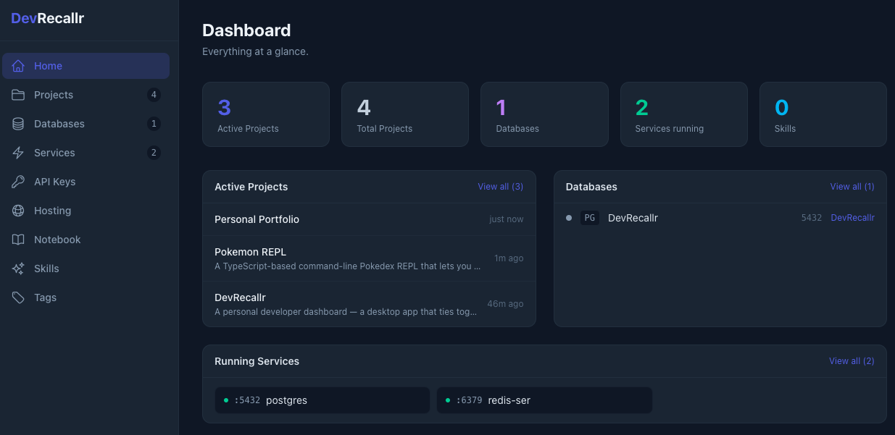
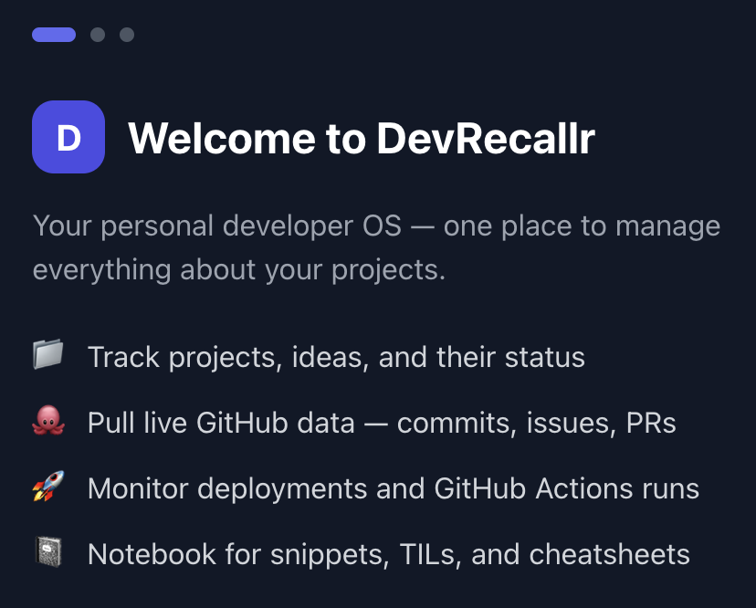
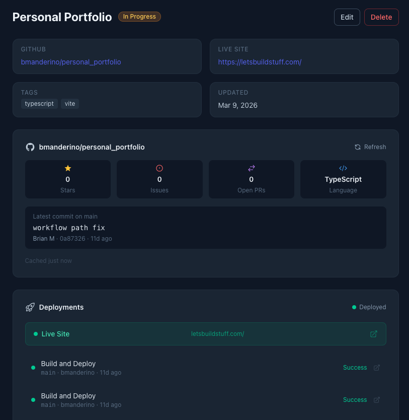
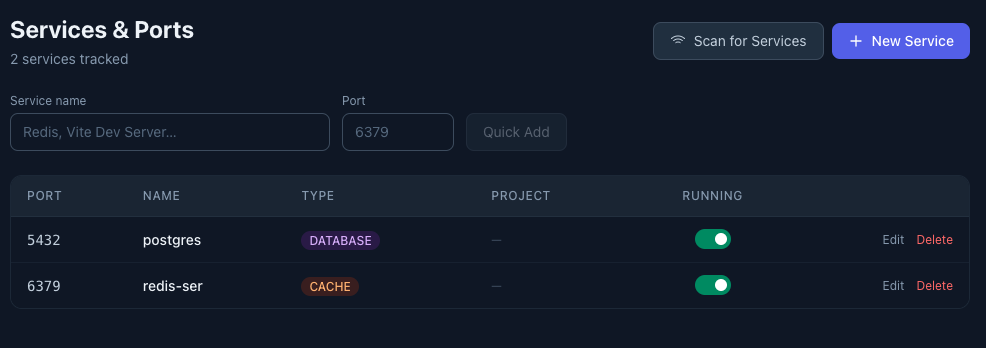

DevRecallr tracks your projects, active services, GitHub activity, and more — all in one glanceable dashboard built for your local machine.

You have six terminals open, three projects running, and no idea which port belongs to which app. You've rewritten that API snippet twice this week because you forgot where you saved it. And context-switching between your task manager, notes, and browser tabs burns thirty minutes before you've written a line of code.
DevRecallr was built to fix that — a local-first developer dashboard that keeps everything in one glanceable window, so you can get back to building.
Features
Keep every project's status, stack, and notes in one place.
See recent commits and repo activity without leaving the app.
Auto-detect running ports and local services at a glance.
Projects, services, notes, and keys — one screen, zero tabs.
Screenshots



Free download. No account required. Runs entirely on your machine.